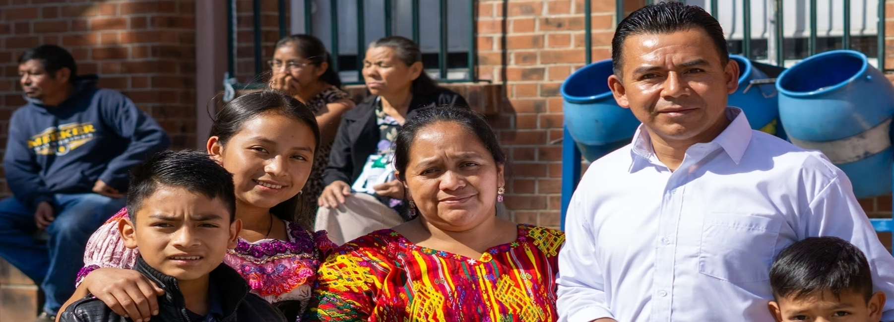

Bienvenido
Kinal un lugar de prestigio.

Bienvenido
El futuro es hoy.

Bienvenido
Mejoremos el futuro de guatemala
Kinal un lugar de prestigio.
El futuro es hoy.
Mejoremos el futuro de guatemala
Kinal es un Centro Educativo privado, no lucrativo, dirigido a la formación técnica profesional de jóvenes y adultos, de beneficio colectivo y asistencia social en favor de los sectores más necesitados de la comunidad. Nuestro valor fundamental es enseñar a realizar el trabajo bien hecho, que sea la base de la superación de alumnos y el medio para servir a los demás.


Brindamos una variedad de servicios diseñados para potenciar el aprendizaje de nuestros estudiantes.

Ofrecemos clases presenciales donde los estudiantes pueden interactuar directamente con los docentes y compañeros, promoviendo un aprendizaje activo.
Nuestros cursos en línea permiten a los estudiantes aprender desde la comodidad de su hogar, adaptándose a sus horarios y ritmos de estudio.


Proporcionamos orientación académica personalizada para ayudar a los estudiantes a elegir el camino educativo que mejor se adapte a sus aspiraciones y habilidades.